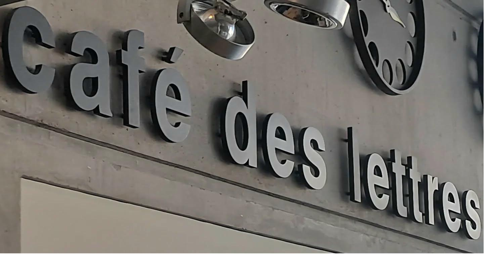
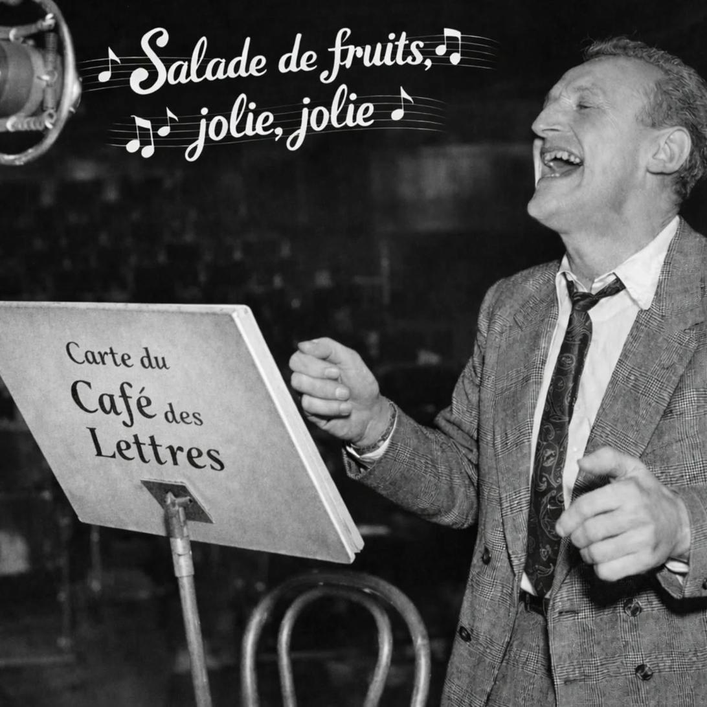
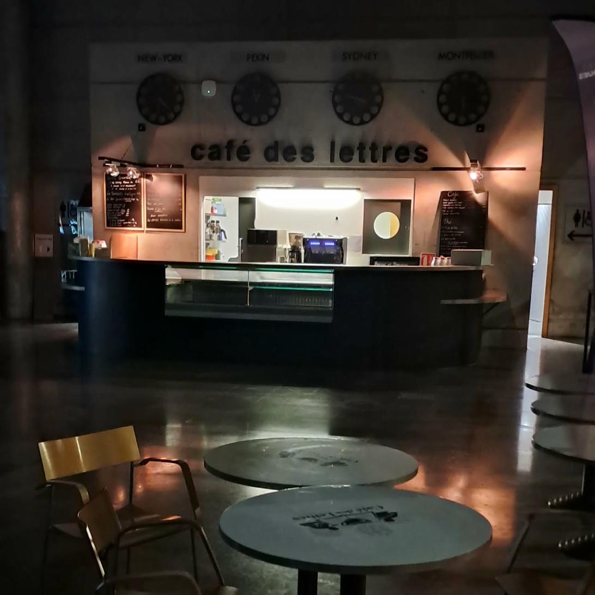

Le Lieu
Un espace où chaque tasse raconte une histoire, chaque plat un voyage.
Né d'une passion partagée
Le Café des Lettres est un lieu singulier, ancré dans le tissu culturel de Montpellier. Imaginé comme un carrefour entre les arts, les lettres et les saveurs du monde, il accueille chaque jour une communauté diverse et curieuse — étudiants, lecteurs, créateurs, familles et voyageurs de passage.
Installé au sein de la Médiathèque Émile Zola, place Georges Frêche à Montpellier, dans un espace à la fois contemporain et chaleureux, avec ses horloges marquant l'heure à New York, Pékin, Sydney et Montpellier, le café s'affirme comme une fenêtre ouverte sur le monde. Chaque détail est pensé pour inviter à la curiosité.
Notre équipe passionnée compose chaque jour une carte sincère, qui ne choisit pas entre le terroir et l'exotisme — elle les marie. Des madeleines de Marcel aux Fusion Bowls des Pokémons, du café Orient Espresso au Matcha Latte de Kintaro, le voyage commence à la première commande.


Quatre horizons, une vision
L'ouverture au monde
Nos horloges affichent New York, Pékin, Sydney et Montpellier. Nous croyons que la curiosité est une forme de générosité — envers les autres et envers soi-même.
La cuisine fusion
Aux Quatre Horizons, nous mêlons l'ici et l'ailleurs. Nos recettes s'inspirent de l'Inde, du Japon, des Amériques et du Sud de la France sans jamais trahir l'une ou l'autre.
La culture comme atmosphère
Des livres en libre accès, une programmation douce — lectures, musique, expositions — le Café des Lettres est un espace culturel déguisé en café.
Le goût de l'artisanat
Sirops maison, ginger beer maison, lassis préparés sur place — nous prenons le temps de faire les choses bien, avec des ingrédients choisis avec soin.
L'ambiance du café

Prêt à nous rendre visite ?
Retrouvez-nous à la Médiathèque Émile Zola, place Georges Frêche à Montpellier — ou écrivez-nous, nous serons ravis de vous accueillir.